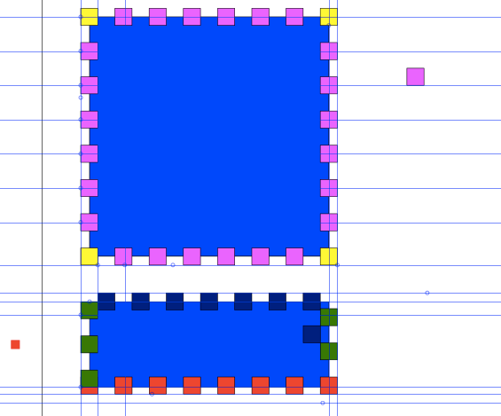
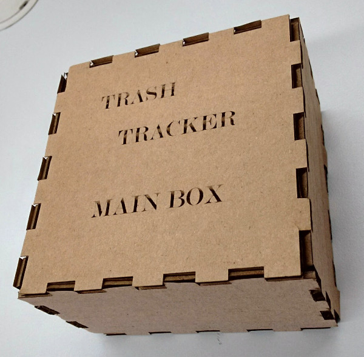
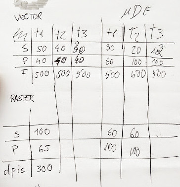
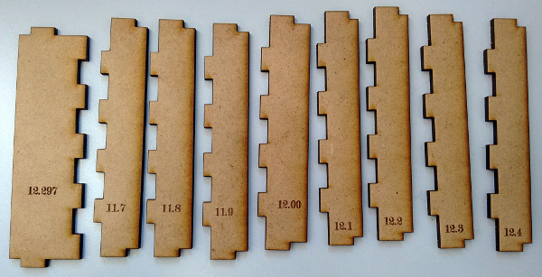
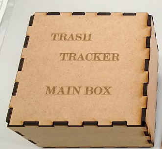

Computer-Controlled Cutting
Digital cutting... and... action ;)
Design a press fit Kit - cut it - test it
My first atempt to laser cuting and build press fit constrotion's
Press Fit Box in Card Board
This week we need to design build and test a press fit constrotion. This is a new subject to me, so i start by the begining. First i try hard to figure what is the logic in the inter conection dent's of the side's of a press fit Box. I design by my self a box try to put my teories in pratice and here the result. Inckscape image of the original box
But i'm not like it. The idea of press fit and kit is that could be mounted in many possible way's. So i think think, try to imagine the conection's and test it in a 3d software, but i pass to this image
Press fit box
With this image i figure how it work's.
So i figure aout this law's:- 1 - the dent's must have de thicness of the material (easy).
- 2 - every dent must be equal, execpt the kraf distance
- 3 - this implies that the box sizes and dent sizes are inter-related
- 4 - there are two dent configurations, one male other female.
- 5 - if female dent's be horizontal so the male must be in vertical boarders. And vice versa.
After that rules are cleared it becomes easy to design the box.
I use inckscape, and try to implement the clone tehcnique teach by Neal.

Base box
So first as i have made in the first box i made some gauge to help me test the how good the male and female sides conects. So in the first the dimension that inckscape gives to my 12 mm dent becomes migacaly 12,297 so i asume that because we will have some distance in the kerf. I make the others gauge's in card board. And thet i chouse the dimension of 12.4 mm in the female dent.
gauge's in card board
And then i cut the the box, as you can see here. press fit in card board
I use the Epilog mini laser 60W in the parameter's i use a table form Epilog, but i build my own, thak's Delio and Luis ;) Here is my table: S-speed P-Power F-Frequency
This table proves to be very imporntant because the laser machines become durty in the long run, so the default valeus tend to be in acurate. In mi case in same situations the valeus have difereces of 50%. Well. the home work is done. So why not i try it in anotehr material and explore more the inkscape. I do it and i find this.- - I must build dent's with round corner as Niel said ;)
- - Make a file with all the diferent face's.
- - Every face have two side female and male side.
- - Female dent have one "master" dent, the others are clone's from that.
- - Male dent have their own "master" dent.
- - Every face have two side female and male side.
- - Guide lines in inkscape are awsome. you can find it picking it from the rulers.
- - When i whant to make the final shape, all object merge in one, face and dent's.
- I must:
- - unlink the clones
- - convert all object to path
- - and the make a union of them and that's it.
Inkscape box template MDF
Here are the photo of the gauge's in MDFInkscape box template MDF
In this test i found that mi short measure 12mm still be to lose. So i make the other's valeus shorter. After that i find that 11.9 is to tight and 12mm is to lose so i chouse 11.95 and with the help of Luis i make an act of faith and i go to the cut of the all box. Inkscape box template MDF
This time with the round conner's a great insight. And then here it is the Awsome box. Could be a very simple box, but it allow's me to learn a lot about, inkscape, 2D design, laser cut, and press fit contruction's {kind=link}
The final box in MDF
Antimony
I try to install it 3 times in virtual machines and stuff like that, i can't do that and i don't give to that the priority. I just play it around with Luis that put it to work in the Linux in a Fablab computer.Stikcers
Well is computer cutting why not play with some stikers and give them to my Kid's ;) the first thing is to google for free vectorial animals image's no sucess Googling to images of stikers of animal's this is more easy. But this images are raster. So what we can do...?! Ahhhh yes, it's it Fabmodules. them prove to be great. as you can see.Here is the link to this week files. :)